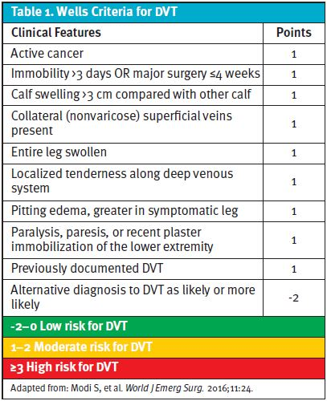
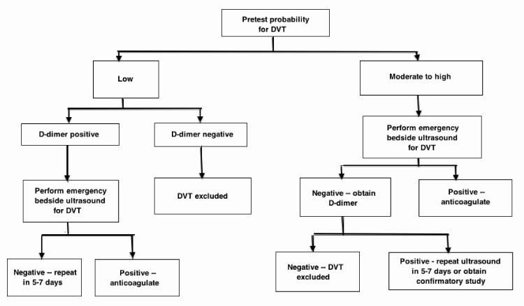

----------Explanations----------
--Investigations--
1. Applying the Wells criteria for DVT is necessary as the next step.
In community/outreach settings, the Wells score is a validated clinical decision rule to estimate pre-test probability of DVT, stratifying patients into low (score ≤0), moderate (1-2), or high (≥3) categories based on risk factors (e.g. recent major surgery within 12 weeks, alternative diagnosis less likely than DVT) and signs (e.g. calf swelling >3 cm compared to contralateral leg, pitting edema confined to symptomatic leg, localized tenderness along deep venous system).
A high score (≥3) indicates high pretest probability, warranting urgent referral for compression ultrasound without D-dimer, as per evidenced-based clinical algorithms that recommend direct imaging for moderate-to-high risk patients to guide safe escalation in high-risk post-operative cases (Wells et al., 1997; American College of Emergency Physicians Clinical Policies Committee, 2003; Reshi et al., 2015).

Table1: Wells criteria for DVT

Figure 1. Deep Venous Thrombosis (DVT) Clinical Algorithm Suggested by the American College of Emergency Physicians (ACEP)
2. Assessing Homan’s sign is not the optimal first step.
Homan’s sign (pain on passive dorsiflexion) has low sensitivity/specificity (~50% or less) and poor diagnostic utility; it risks clot dislodgement and is no longer recommended as a primary maneuver.
Moreover, Homan’s sign is often positive in various other conditions causing calf pain and is not helpful for differential diagnosis in Ms. Lui’s case, as other conditions that Ms. Lui could possibly be suffering from (e.g. calf strain, intramuscular haematoma), might lead to a positive Homan’s sign as well (Ambesh et al., 2017; Hillegass et al., 2022).
3. Inspecting the hip surgical wound is not necessary as the next priority.
While wound infection or hematoma must be considered post-THR, the unilateral calf swelling, erythema, warmth, and pain in a high-risk post-op period point more to DVT than local surgical complication alone. Prioritizing VTE screening avoids delay in addressing a potentially life-threatening condition (Hillegass et al., 2022).
4. Perform tip toeing test is not necessary as the next step.
The tip toeing test (or single-leg heel raise test, assessing ability to rise onto toes) evaluates calf muscle strength, plantarflexion power, and integrity of the gastrocnemius-soleus complex/Achilles mechanism.
It may provoke or exacerbate calf pain in conditions like gastrocnemius strain, tear, or Achilles pathology, but it has limited diagnostic specificity for differentiating DVT from musculoskeletal causes.
In suspected DVT post-hip replacement, performing this test risks aggravating symptoms, provoking clot dislodgement and embolization risk during forceful plantarflexion, or delaying priority VTE screening via Wells criteria.
Pain/weakness on tip toeing is nonspecific (occurs in calf strain, tear, or DVT-related discomfort) and does not reliably rule in/out DVT; guidelines prioritize clinical probability scoring and urgent imaging over provocative functional tests in high-risk post-operative settings (Hillegass et al., 2022).
--Treatment--
1. Withholding weight-bearing and referring to AED is optimal.
Suspected acute DVT post-hip replacement is a potential emergency due to PE risk. In outreach PT, cease aggravating activities, elevate leg to reduce venous pressure, avoid massage/compression until excluded (risk of embolization), and activate urgent referral for diagnostics (doppler US ± D-dimer) and possible anticoagulation.
This minimizes propagation or embolization in elderly, multimorbid patients (Hillegass et al., 2022; Konstantinides et al., 2019).
2. Adding ankle pumps and compression stocking is not optimal.
Mobilization and mechanical compression (stockings/IPC) are contraindicated until DVT is ruled out, as they may dislodge clot or worsen embolization risk.
Ankle pumps alone are insufficient for suspected acute DVT; guidelines advise against routine compression in acute phase without confirmation (ACCP/CHEST guidelines; Hillegass et al., 2022).
3. Providing TENS, and strengthening is not optimal.
These interventions ignore VTE red flags and could promote activity/mobilization in unstable state, increasing risk of PE. TENS is not indicated for suspected DVT and may be harmful (Hillegass et al., 2022).
4. Reassessing in 3-5 days while progressing exercises is not optimal.
Delaying evaluation for suspected DVT risks progression to PE or death, especially in elderly post-THR patients (peak risk 2-10 days post-op). Urgent same-day escalation is required, not watchful waiting (Hillegass et al., 2022).
References:
Ambesh, P., Obiagwu, C., & Shetty, V. (2017). Homan’s sign for deep vein thrombosis: A grain of salt? Indian Heart Journal, 69(3), 418–419. https://doi.org/10.1016/j.ihj.2017.01.016
American College of Emergency Physicians (ACEP) Clinical Policies Committee, & ACEP Clinical Policies Subcommittee on Suspected Lower-Extremity Deep Venous Thrombosis (2003). Clinical policy: critical issues in the evaluation and management of adult patients presenting with suspected lower-extremity deep venous thrombosis. Annals of emergency medicine, 42(1), 124–135. https://doi.org/10.1067/mem.2003.181
Hillegass, E., Lukaszewicz, K., Puthoff, M. L., Bourgeois, M. S., Wesley, L., Andrade, R., Butcher, J., Harris, L., Hopp, J., & Jackson, L. (2022). Role of Physical Therapists in the Management of Individuals at Risk for or Diagnosed With Venous Thromboembolism: Evidence-Based Clinical Practice Guideline 2022. Physical Therapy, 102(8), pzac082. https://doi.org/10.1093/ptj/pzac082
Konstantinides, S. V., Meyer, G., Becattini, C., Bueno, H., Geersing, G. J., Harjola, V. P., ... & Zamorano, J. L. (2019). 2019 ESC Guidelines for the diagnosis and management of acute pulmonary embolism developed in collaboration with the European Respiratory Society (ERS). European Heart Journal, 41(4), 543–603. https://doi.org/10.1093/eurheartj/ehz405
Reshi, R. A., Pulivarthi, S., Zelensky, A., Singh, T., Pawar, G., & Gurram, M. K. (2015). Evaluation of use of wells criteria and D-dimer for screening of venous thromboembolism in a community hospital. General Internal Medicine and Clinical Innovations, 1(1), 12-15.
Wells, P. S., Anderson, D. R., Bormanis, J., Guy, F., Mitchell, M., Gray, L., ... & Hirsh, J. (1997). Value of assessment of pretest probability of deep-vein thrombosis in clinical management. The Lancet, 350(9094), 1795–1798. https://doi.org/10.1016/S0140-6736(97)08140-3
Wells, P. S., Anderson, D. R., Rodger, M., Forgie, M., Kearon, C., Dreyer, J., Kovacs, G., Mitchell, M., Lewandowski, B., & Kovacs, M. J. (2003). Evaluation of D-dimer in the diagnosis of suspected deep-vein thrombosis. The New England journal of medicine, 349(13), 1227–1235. https://doi.org/10.1056/NEJMoa023153
Case creator: Ms Gigi Cheung, Mr Thomas Mak